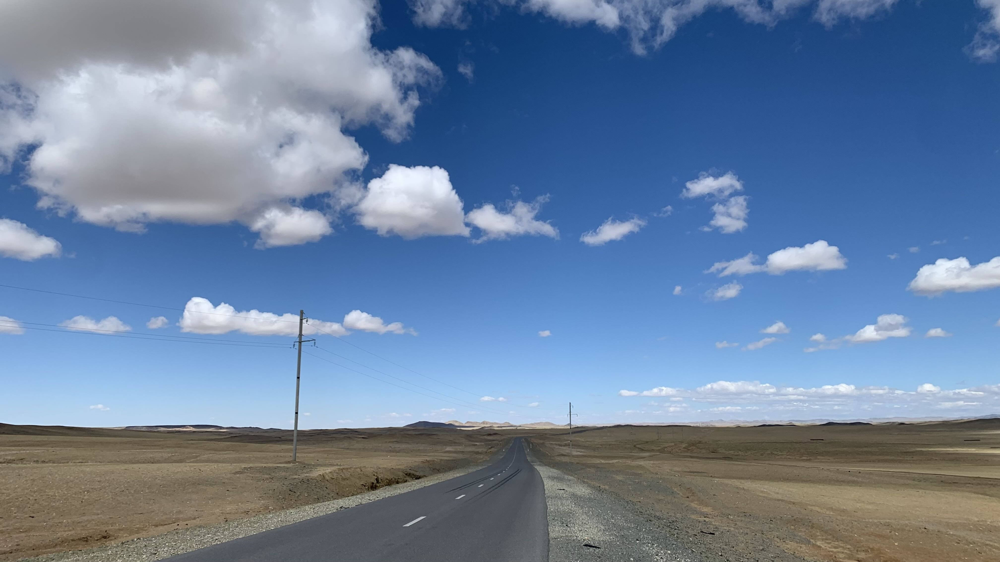
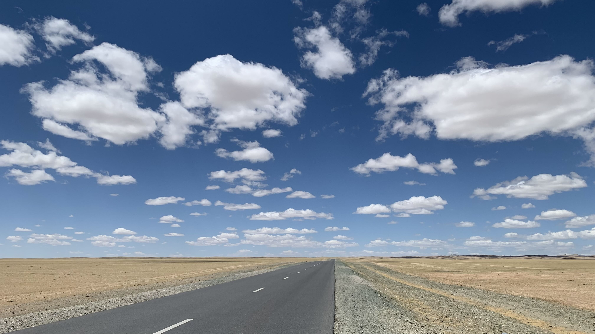
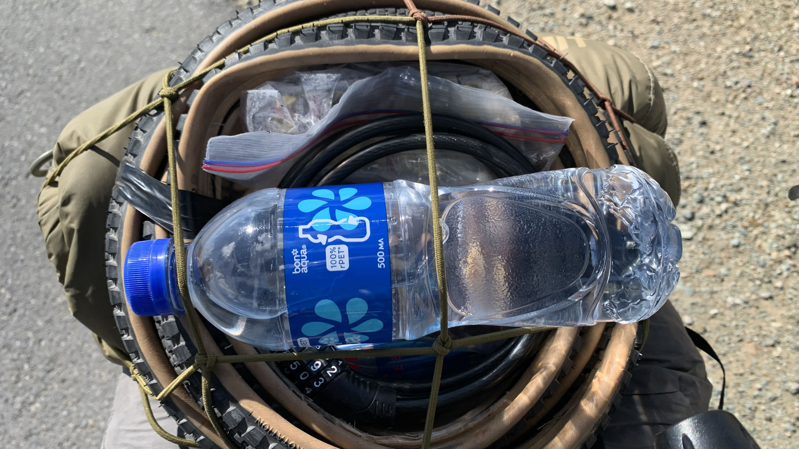
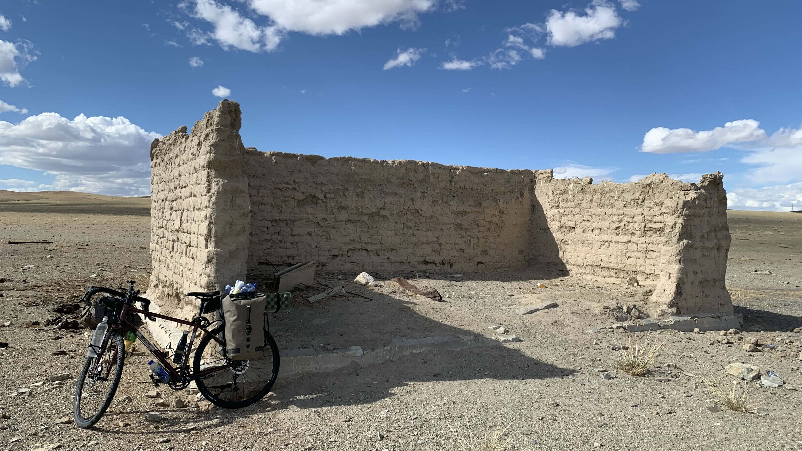
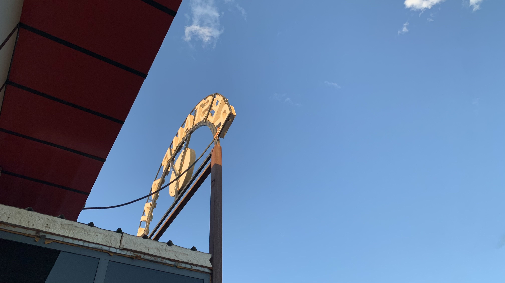
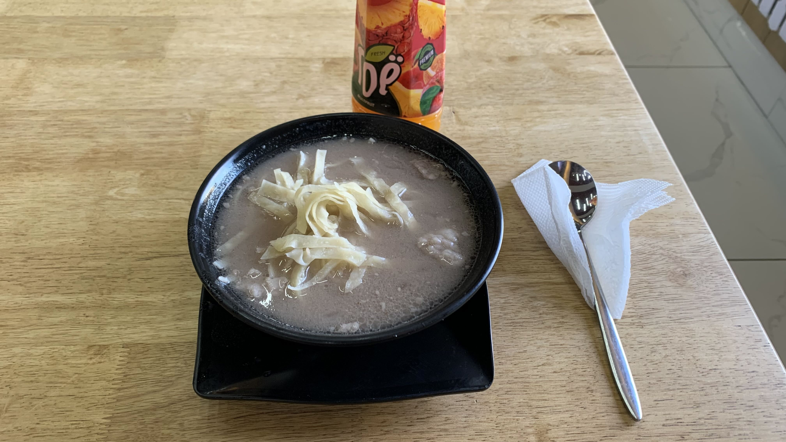
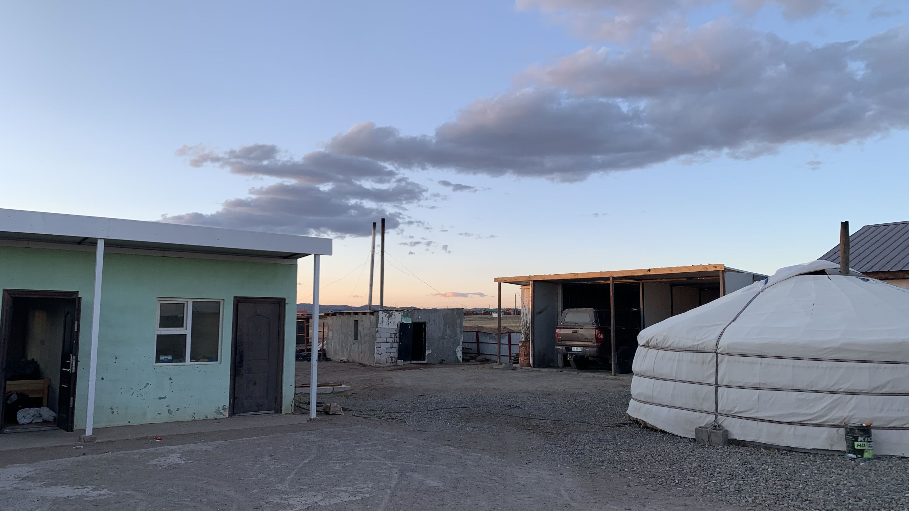
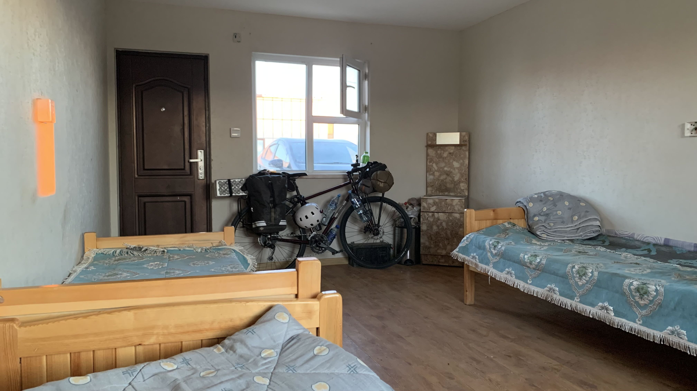
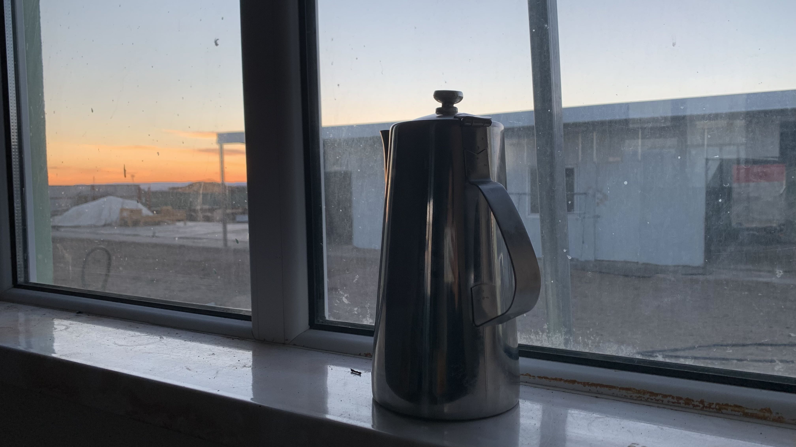

k-Day 099｜Are You OK?
早上八點起床，吃了幾片餅乾，到餐廳跟老闆買了一瓶蘋果茶就早早出發。

說早似乎也有點晚，騎了兩個多小時逆風又開始吹得頭昏腦脹。約莫十二點已經沒有任何前進的具體價值，即便推車前進也是搖搖晃晃，找到涵洞躲在下面休息。
實際上完全沒有休息的感覺，現在就看是先被風乾還是被太陽曬乾，這兩種作用哪個更快呢？真是相當好奇。
就在我將頭埋在二十三號的椅墊上抽離自我時，涵洞上方一輛車停下來，車主探頭出來說：「Сайн байна уу？Are you ok?」
實在太尷尬，立馬抬頭起來露出陽光燦爛的單車騎士笑容，揮揮手說：「是的，只是因為風大。」對方多確認了一秒就開車離去。看著離去的車尾，心想要是跟他說：「我超不ok，我靈魂上快要往生了，這風根本是酷刑，拜託帶我到八百公里外的口岸！」不知道對方會不會答應？

認份地在下午五點牽車回到公路上，風還是那麼猖狂。打開瓶蓋想喝口水壓壓驚，沒想到一扭開瓶蓋，風竄進液體和瓶身之間殘存的空間迴旋，離開時從瓶口傳來恐怖片會出現的嗚嗚聲。
以後強制十二點到五點休息好了，這種狀態完全沒意義。老實說這種狀態下寫的日誌究竟能不能讀，我也實在不太確定，腦中只有混亂的聲音，無止盡地在腦殼裡侵蝕我的腦汁。也許早已沒有腦汁，全都被這些風寄生了。

好不容易踩了幾步，立刻又停下一輛黑色轎車，等我騎到旁邊時，車主拿出一瓶礦泉水，同樣問我一切都好嗎？我說很好，只是風大。車主笑了笑說這風確實大啊，祝你旅途順利，就這麼離去了。
其實可以問問我想不想上車，很大概率我可能會委婉拒絕，但心裡是想上車的。只要演一下這類欲拒還迎的戲碼，再一起把二十三號搬到後車廂，就可以不用站在原地風乾了。

經過廢墟，推著二十三號往牆邊靠，試圖遮蔽一點風和烈日。停了幾分鐘，遠處蒙古包的狗似乎發現我，開始朝著廢墟的方向吠叫。
五點到七點仍然呈現走走停停的節奏，停的時候將手肘靠在把手上，兩隻手環抱著頭部，只要把頭埋起來，風聲就會小一點（心理上的）。
大概是七點多越過最後一個山丘，看到山腳下的城鎮。正想暢快地往下滑，兩下山谷吹上來的側風就把我連人帶車推到對向車道。還是乖乖地按著煞車小心翼翼下山，不需要貪這幾秒鐘的時間。
眼見谷底的加油站和休息站越來越近，左前方山坡突然竄出一隻小黑狗，眼看牠沒有要攻擊的意思，就卸下心房從牠旁邊滑過。沒想到牠對著山谷一聲嚎叫，四面八方竄出五隻狗。右邊最靠近車道的兩隻先發，衝到我腳邊對著我狂吠，我用盡最後一點生命值狂踩踏板甩開牠們。緊接著另外兩隻從右前方草地裡的垃圾堆衝上柏油路，一直在後方追趕，左邊山坡上的一隻則試圖從前面包夾。
這就是兵推的重要啊！旅行前在社子島河邊練騎，曾經的五隻野狗就是用這種隊形包夾我。短短瞬間腦中預判了野狗們的軌跡，下一秒唰地一聲鑽過縫隙，二十三號帶著我殺出重圍，一路狂奔直到休息站門前才停下來。

整個人已經發軟了，無視工作人員和廣場上小朋友的目光，攤在長椅上像一條軟爛的鹹菜乾。
從餐廳出來了兩個像是員工的人，詢問今晚能否讓我在旁邊紮營，他們笑著點點頭就進去了。
解決住宿問題後開始放空，一直垂在長椅上，過了好久才起身進去點餐。

點了一份17000的羊肉麵，肉量很足，相當好吃。吃完後到隔壁超市採買物資，聽說路上貨源稀少，一次就買了三瓶1.5公升的瓶裝水。
回到餐廳外把水和果汁、咖啡裝上車，剛剛點餐的員工出來問我的旅程。過程中一位騎著越野登山車的小男生一直在我面前練孤輪，他的變速鉤爪外安裝了防撞條，相當專業。

聊了一陣，收銀女子和我說她可以帶我到後面找地方紮營。跟著繞到後方，沒想到是一排像員工宿舍的地方。三面都有牆，正在物色角落時，她說可以幫我看看有沒有空房間讓我住進去。
見她在每個房間看了一陣，突然一位年輕男子從其中一個房間帶著自己的家當面無表情地走出來，似乎被要求搬到隔壁。我看著這位女子，問她：「你是這裡的老闆嗎？」她說不是，「我姊姊才是。」

就這樣推著二十三號睡進一間高級宿舍房，沒錯，對方主動讓我把車推進房。簡直太感激了。雖然心裡著實對剛剛那位男子感到抱歉，但身體卻相當誠實地躺到床上攤開睡袋。

沒多久老闆的妹妹突然敲門，帶了一個垃圾袋進來清理房間，還拿了一個水壺放到窗台邊。
「這是熱水。」
昨天是在路上被揍哭，今天差點被感動到哭。謝謝你們，我會像馬可波羅一樣為大蒙古國的一切留下紀錄的。
今日花費： 蘋果茶 6000、羊肉麵 17000、水+蘿蔔汁+咖啡+衛生紙 28500元